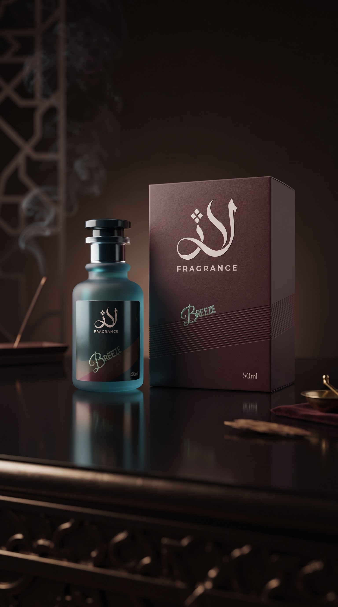

How To Choose Your Everyday Fragrance
Learn how to choose a fragrance that matches your style and everyday routine.
Choosing an everyday fragrance is about finding a scent that feels comfortable, natural and suitable for your lifestyle.
Fresh and clean fragrances are often easy to wear during the day, while warmer and deeper fragrances can work well for evenings.
The most important thing is to choose a fragrance that matches your personality and makes you feel confident.